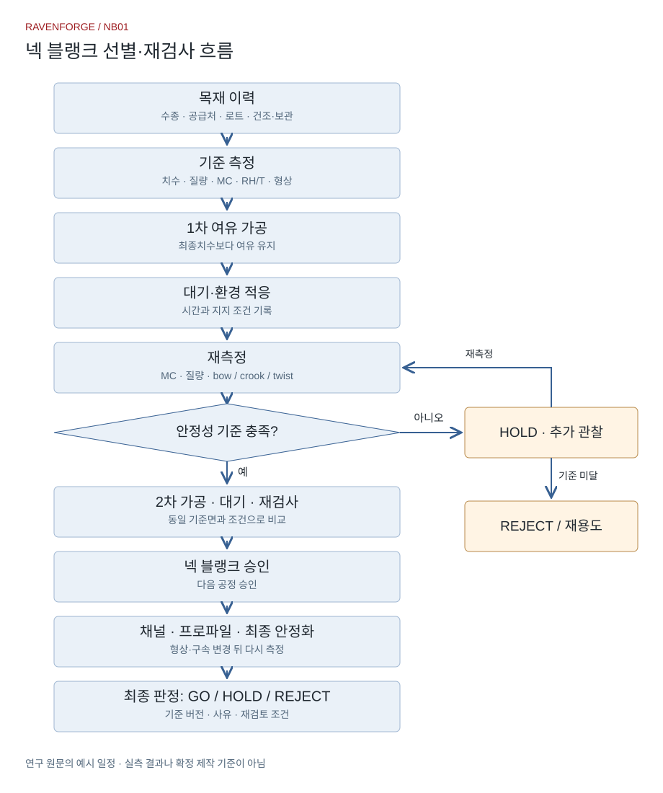
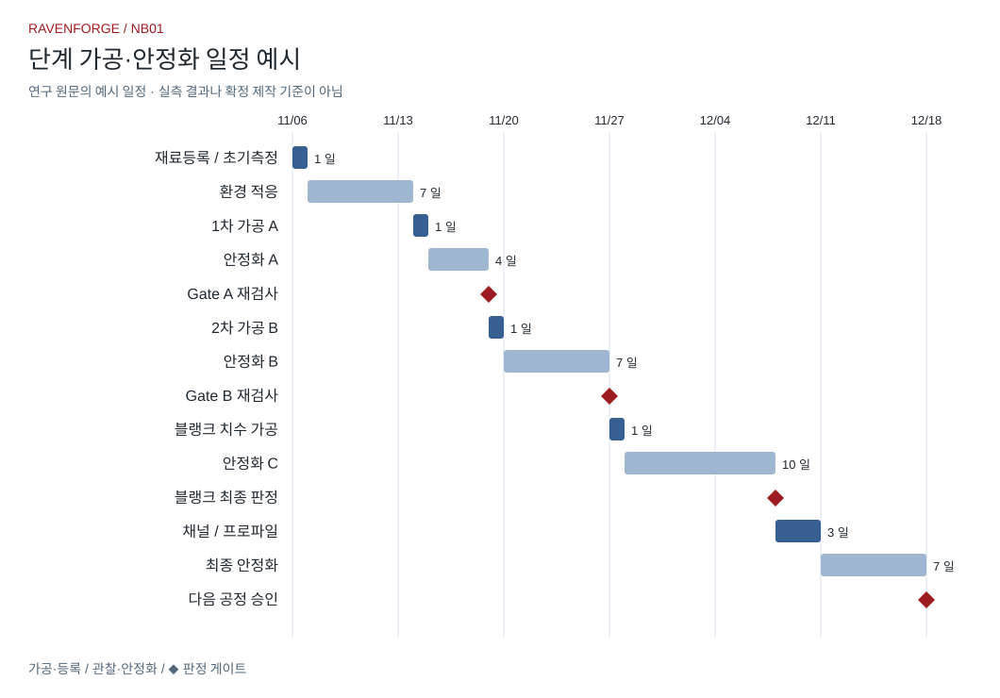

RESEARCH JOURNAL / NB01
넥 블랭크 선별과 안정화 — 장인의 관찰을 공정 기록으로
2026-11-06 · v1.1 · 영상·문헌 검토 및 실험 설계판 / 실측 대기
01. 연구 질문과 근거의 구분
같은 수종·로트의 블랭크도 가공 후 같은 거동을 보이는가? 대기 후 재검사가 실제 불량 선별에 도움이 되는가? 영상의 제작자 설명, 문헌의 관찰 결과, RavenForge의 작업 가설을 구분한다. 제공된 심층 연구와 이전 학습 노트의 타임코드를 사용했으며 이번 편집에서 전체 영상 전사를 새로 검증하지는 않았다. 정확한 보관 연수·건조실 체류기간·넥 형상 유지기간은 서로 합산하거나 임의의 표준값으로 바꾸지 않는다.
02. 영상에서 가져온 공정 원칙
00:39의 무게·개체 차이는 재료별 기록의 출발점이다. 03:40의 단계 가공과 선별, 09:21의 보관재 재가공 후 움직임은 “기다린 뒤 다시 검사한다”는 공정으로 연결한다. 10:38의 톱질·직각·수직 작업과 16:47의 평행선 시연은 수공구 훈련 항목으로 옮긴다. 이는 기존 노트의 의역 요약이며 영상 속 수종·수치·발언의 축자 전사가 아니다. [1]
| 타임코드 | 기존 노트의 요지 | 기록으로 전환 |
|---|---|---|
| 00:39 | 같은 수종의 무게·상태 차이 | 로트·질량·치수·MC |
| 03:40 | 단계 가공과 불안정 재료 선별 | 절삭량·대기·판정 |
| 09:21 | 보관재도 재가공 후 움직일 수 있음 | 가공 전후 형상 이력 |
| 10:38 | 톱질·직각·수직 기본기 | 치수 및 각도 편차 |
| 16:47 | 손가락 평행선 시연 | 목표 간격·최대 오차 |
03. 문헌 검토: 시간보다 상태를 기록한다
목재는 주변 온도·상대습도와 현재 함수상태에 따라 수분을 교환한다. 따라서 함수율(MC)을 단독으로 적지 않고 온도·RH·측정 위치와 함께 기록한다. 건조·운반·보관 중 함수율 관리가 사용 중 치수변화 관리에 연결된다는 FPL의 설명은 환경 이력을 남길 근거다. 오래 보관했다는 사실만으로 다음 절삭 뒤의 형상을 보증할 수는 없다. [2–3]
04. 넥 연구를 베이스 설계로 옮길 때의 한계
Chen 등의 2025년 연구는 17개 수종의 클래식 기타 넥에 장기 하중과 습도 변화를 적용했다. 공개 초록에서는 마호가니·cedro의 상대적으로 일관된 변형, walnut·alder의 대체재 가능성을 보고한다. 정목 시료가 더 안정적인 경향은 있었지만 대부분 수종에서 방향 간 차이가 유의하지 않았다. 이 결과를 37–34인치 멀티스케일 베이스, 5피스 접착 넥, 트러스로드·보강재 조합의 승인으로 확대하지 않는다. 여기서는 공개 초록·서지만 확인했으며 정량 결과표 전체를 재분석하지 않았다. [4]
05. 마스터 재료 카드
Wood ID를 모든 측정·사진·절삭 기록의 공통 키로 사용한다. 수종 상업명과 학명을 분리하고 공급자의 건조 표시와 실제 측정값을 별도 필드에 둔다. 질량/부피로 계산한 값은 해당 함수상태의 겉보기 밀도다. 이를 전건 밀도나 비중으로 바꿔 부르지 않는다.
| 기록 묶음 | 필수 항목 |
|---|---|
| 재료 이력 | Project/Wood ID, 수종·학명, 공급처·로트, 구매일, KD/AD/unknown, 보관 이력 |
| 기준 측정 | L/W/T (mm), 질량 (g), MC (%), 온도 (°C), RH (%), 측정기·보정 |
| 결·결함 | 정목/추목/판목/혼합, 결의 이탈, 옹이·할렬, 기준면 A/B |
| 형상 | bow/crook/twist (mm), 기준길이·지지점, 폭·두께 A/B/C |
| 공정 | 가공일시, 면별 제거량, 전후 치수, 대기 시작·종료, 지지·구속 조건 |
| 사진 | 전체 정면·측면, 양 끝 단면, 기준자 포함 형상, 결함, 측정 위치·화면 |
| 판정 | GO/HOLD/REJECT, 기준 버전, 사유, 다음 측정일, 승인자 |
원문 참고 이미지
원문에 제시된 시각 참고자료. RavenForge 작업물이나 영상 캡처가 아니며, 제품 사진만으로 재료의 함수율·강성·안정성을 판정하지 않는다.

출처: StewMac

출처: Exotic Wood Zone

출처: イシバシ楽器

출처: Saucet Guitars
06. 측정 프로토콜과 오차
기준면 A/B, 지지점, 측정 길이, 측정 방향과 시간대를 고정한다. Bow는 넓은 면 방향의 길이 휨, crook는 측면 방향의 길이 휨으로 정의하고, twist는 정해진 지지 조건에서 양 끝 단면의 상대 비틀림을 측정한다. 기구·분해능·영점·반복 측정 편차를 기록한다. 임의의 두 코너 높이 차이만으로 전체 비틀림을 확정하지 않는다. 원시 mm값과 기준길이를 보존하며 서로 다른 길이의 휨을 단순 비례 환산해 동등하다고 취급하지 않는다.
07. 단계 가공과 판정 게이트
입고검사 → 작업실 환경 적응 → 여유치수를 남긴 1차 가공 → 관찰·재측정 → 2차 가공 → 관찰·재측정 → 블랭크 승인 순서로 운영한다. 이후 채널·프로파일·접착 등 형상과 구속조건을 바꾸는 공정 뒤에도 재검사한다. 대기 종료는 달력 일수만으로 결정하지 않고 환경, 변화 추세, 측정 불확도와 다음 공정 여유를 함께 판단한다. 원문의 3–14일 등 기간은 탐색용 일정 예시이며 말로우 표준이나 검증된 최소기간이 아니다.
| 판정 | 조건 | 조치 |
|---|---|---|
| GO | 사전 기준 만족, 다음 가공 여유 확보 | 다음 공정 승인; 영구 안정 보증 아님 |
| HOLD | 환경 변동·추세 지속·측정 불확도 | 동일 조건 재측정, 필요 시 관찰 연장 |
| REJECT | 해당 넥 용도의 사전 기준 미달 | 격리·재용도 검토; 사유와 원시값 보존 |
넥 블랭크 선별·재검사 흐름

단계 가공·안정화 일정 예시

08. 파일럿 실험 계획
아래 다섯 실험은 모두 미실시다. 표본 수는 실행 가능성을 검토하기 위한 출발점이며 통계적 검정력을 보장하지 않는다. 같은 원목·로트 내 짝짓기와 무작위 배정을 우선하고, 표본별 원시 데이터와 중도 제외 이유를 보존한다. 반복 시간점은 독립 표본 수로 세지 않는다. 단계가공군과 일괄가공군은 최종 치수·환경·총 경과시간을 맞추고 각 절삭 직후와 공통 종료시점을 함께 비교한다.
| 실험 | 초기 설계안 | 비교 지표·통제 |
|---|---|---|
| E1 단계/일괄 가공 | 동일 로트 n=10, 각 5개; 단계 사이 72 h 관찰을 탐색값으로 | 동일 최종치수·총기간, Δbow/Δtwist, 가공량 |
| E2 안정화 추세 | n=8–12; 0/6/24/48/72 h, 7/14 d | 변형·질량·MC 변화; 기구 분해능만이 아니라 반복성으로 plateau 정의 |
| E3 같은 수종의 무게 차이 | 같은 로트 n≥20; 동일 환경 조습 전후 | 질량·부피·MC와 겉보기 밀도; 치수 차이 통제 |
| E4 정목/판목 | 각 n=6; 40–45→65→40–45% RH 탐색 주기 | 공통 지지·하중·치수, 습도 이력, 회복·히스테리시스 |
| E5 보관재 재가공 | n=8–10; 7 d 기준관찰 뒤 대칭/비대칭 절삭 | 제거 총량 통제; 0 h–14 d 형상·MC 추적 |
09. 수공구 훈련을 제작 데이터로 연결하기
톱질은 먹선 대비 편차와 절단면 직각을, 수직 드릴링은 출구 위치·각도를, 평행선은 목표 간격과 최대 편차를 기록한다. 같은 치구와 시편 조건에서 반복하고 소요시간·재작업량도 남긴다. 손가락 평행선 긋기는 치수 감각 훈련이며 중요 치수 검사에는 직각자·마킹게이지·측정기를 사용한다. 가구 수업의 톱질·끌질·짜맞춤 결과를 이 기록과 연결하되 현재 숙련도를 검증한 결과로 쓰지 않는다.
10. RavenForge 적용과 다음 실행
첫 실행은 한 수종·한 로트의 넥 블랭크로 좁힌다. 측정 반복성 확인, 가공 전 기준 측정, 단계별 관찰의 순서로 시작한다. EMBLA·ASKR의 복합 넥은 각 스트립의 이력, 적층 방향, 접착제·압착·양생 조건과 조립 후 형상까지 별도로 추적한다. 블랭크의 무하중 안정성은 완성 넥의 장력하 안정성을 대체하지 않는다. L04의 판단 기록과 연결해 판단 사유와 수정 후 결과를 남긴다.
11. 현재 결론과 미완료 항목
채택하는 것은 기록과 재검사 절차다. 특정 수종의 우월성, 단계가공의 효과 크기, 보편적 대기기간·함수율·불합격 공차는 아직 확정하지 않는다. 새 실험 데이터가 쌓이면 기준 버전을 갱신하고 실패 사례도 보존한다. 원문에 있던 국내 건조등급·수종별 수축률·추가 논문의 세부 수치는 이번 발행에서 원출처 대조가 충분하지 않아 제작 기준으로 채택하지 않았다.
빈 기록 양식 다운로드
Material card · CSV · Stage observations · CSV · Hand-tool practice · CSV
참고문헌과 확인 범위
[1]은 제공된 연구 보고서와 이전 영상 노트의 타임코드 요약이다. [2–3]은 FPL 공식 서지·초록, [4]는 Ghent University의 논문 서지·공개 초록을 2026-11-06 확인했다. 표·프로토콜·CSV 양식은 RavenForge의 제안이다. 원문의 참고 이미지 4개는 출처와 함께 복원했으며, 간트 차트와 공정도는 원문 구조를 보존해 다시 렌더링했다. 전체 영상 전사는 재배포하지 않는다.